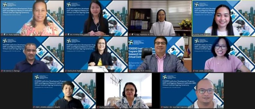

DOST-PCIEERD to put up 3 new laboratories, includes MinNa LProc
By: Aurora Cristina A. Manseras
Posted on November 1, 2021

Photo credit: DOST-PCIEERDThe Department of Science and Technology – Philippine Council for Industry, Energy, and Emerging Technology Research and Development (DOST-PCIEERD), under the Institution Development Program (IDP) will be establishing three (3) new research facilities in the country.
The new laboratories are located in different regions. The Artificial Intelligence (Al) Research Center for Community Development (AIRCoDE) will be put up in Camarines Sur State Polytechnic Colleges, a Microbiology Testing Laboratory (MTL) in Partido State University – Goa Campus in Camarines Sur, and the Mindanao Natural (MinNa) Language Processing (LProc) Research and Development Laboratory at the University of the Immaculate Conception (UIC) in Davao City.
MinNa LProc is established for the research and development of tools, technologies, and resources of Mindanao languages.
Part of the support provided by the IDP is on upgrading and/or setting up of research laboratories and facilities, purchasing laboratory equipment as well as developing research capabilities by means of research grants.
Read the full story here.